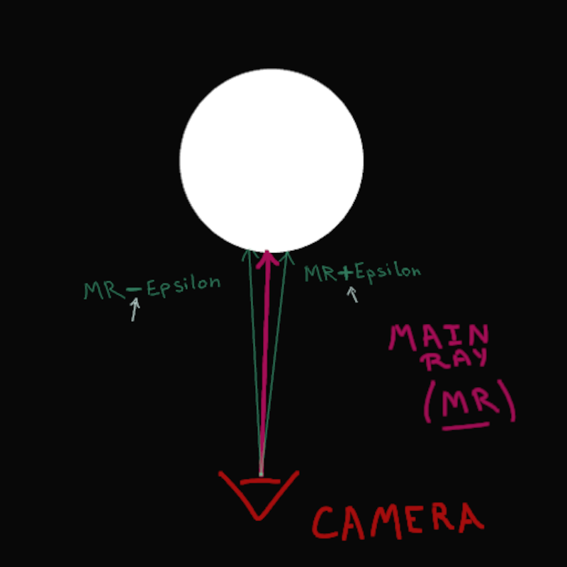
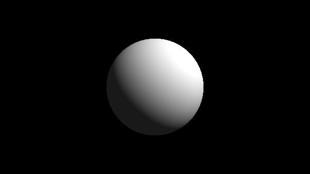

S'ħiħ, ennajmou nchoufou el sphere, ama l'aspet 3D mteƐha mayetchefich.
El étape el jeya, lezem ndhahrou l'effet 3D.
Kima fassarneha f'el intro, nestaƐmlou el "normal" bech naƐmlou el shading.
L'objet hedheya maƐandouch poinèt(vertices) ħadhrin, Ɛla khatrou moch objet 3D Ɛadi, plutôt houwa function mtaƐ distances (SDF).
Lezem neħsbou el "normal", wela plutôt n'tagzou chwaya w ntalƐou el "normal".
Malheureusement, ma najmouch n'talƐou el valeur exacte mtaƐ el "normal" donc:
- nzidou w naq̈sou chwaya f'el hitpoint mtaƐ el ray.
- natrħou w naq̈smou f'el resultat eli lq̈ineh.
F'el taswira el jeya, bech nalq̈aw el valeur mtaƐ el normal,
n'calculiw el scene mteƐna b: scene(MR + Epsilon) - scene(MR - Epsilon),
Fi Ɛoudh juste el scene(MR) eli nestaƐmlouha el Ɛada.

Hedheya el code eli yeħseb el normal f'el directionèt el kol "X", "Y", w "Z".
Note: Lezem n'normaliziw el resutlat. "Normalize" yeƐni naq̈smou el vecteur Ɛla length mteƐou bech ywalliw el valeuràt binét 0 w 1.
vec3 estimateNormal (vec3 p) {
return normalize(vec3(
sceneSDF (vec3(p.x + EPSILON , p.y, p.z)) - sceneSDF (vec3(p.x - EPSILON , p.y, p.z)),
sceneSDF (vec3(p.x, p.y + EPSILON , p.z)) - sceneSDF (vec3(p.x, p.y - EPSILON , p.z)),
sceneSDF (vec3(p.x, p.y, p.z + EPSILON )) - sceneSDF (vec3(p.x, p.y, p.z - EPSILON ))
));
}
Bech ennajmou ngeddou el couleur, fi ékher el function main(), nekh'dhou el distance finale w ntalƐou biha el normal.
BaƐd, n'settiw el fragColor mteƐna eli bien sûr tbaddel el couleur.
// Nlawanou el resultat b'el normal
vec3 normalVector = sceneNormal (cameraPosition + cameraDirection * dist );
fragColor = vec4 (normalVector , 1.0);Tnajjem tenzel Ɛal taswira ken t'ħeb e'testi w tabaddel el code.
Taw, madém Ɛandna el normal, simple shading sehil barcha. Juste naƐmlou dot product lel normal comparé l'direction el dhaw, kima fassarneha q̈bal (intro).
// Nlawjou Ɛal normal
vec3 normalVector = sceneNormal (cameraPosition + cameraDirection * dist );
// N'settiw el direction mtaƐ el dhaw
vec3 lightDirection = vec3 (1, 1, 0);
// Neħsbou el light shading (diffuse)
float lightShading = dot (normalVector , lightDirection );
// Dot product trajƐelna valeur bin -1 w 1, or que aħna manħebbouhech negative
// Donc n'estaƐmlou max(x, y) houni bech tkoun el valeur minimale 0, moch aqal
lightShading = max (0.0, lightShading );
fragColor = vec4 (lightShading , lightShading , lightShading , 1.0);Kima el Ɛada, tnajjem tenzel Ɛal taswira ken t'ħeb e'testi w tabaddel el code.
Hedha l'effet mtaƐ el dhaw yetsamma "Diffuse" w howa mostaƐmel barcha fi presque aya visualization 3D (example: aflèm, games, w architecture).
Houwa sħiiħ ennajmou nchoufou el sphere dhawya taw, ama t'ħessha dhalma barcha m'el jiha lokhra, w'el ambient light heya el ħal houni:
// Nzidou el ambient light
float ambientLight = 0.1;
lightShading = lightShading + ambientLight ;Enzel Ɛal taswira ken t'ħeb tbaddel el code.
Bech ykoun l'impact mtaƐ el dhaw Ɛal objet wadhaħ, madhabina ndawrou el dhaw chwaya w nbadlou el couleurèt.
NaƐtiw couleur lel objet w lel dhaw separé.
1. Awel ħaja, ndawrou el dhaw chwaya (de préférence n'normaliziw el vecteur bech dima ykoun bin 1.0 w 0.0):
// Hedha kifeh kén
vec3 lightDirection = vec3 (1, 1, 0.0);// W hedha kifeh walla
vec3 lightDirection = normalize (vec3 (1, 1, 0.8));
2. Taw naƐtiw couleur lel objet, couleur lel diffuse light w couleur lel ambient light.
M'el mostaħsan nkharjou el dot product separé, khater fama chance bech nestaƐmlouha fi d'autres parties.
F'el graphics, "dot product bin el direction mtaƐ el dhaw w'el normal" Ɛand'ha esm: "NormalDotLight" wela "ndl"
// Juste baddelna l'esm
float ndl = dot (normalVector , lightDirection );
Nbadlou esm el "lightDirection" zeda w nriddouh el terme technique "diffuseLight".
En plus, taw bech nwalliw nestaƐmlou el variable el jdida "ndl".
Taw el sphere wadh'ħa w tnajem tq̈oul mafamech mochkel, ama todh'ħer plastique chwaya w neq̈sa lamƐa.
Enzel Ɛal taswira w jarrab el code, ma tefhem ken mat'fassed'ha w tsallaħ'ha!
Pagèt okhrin: sdf - advanced | shaders | Home